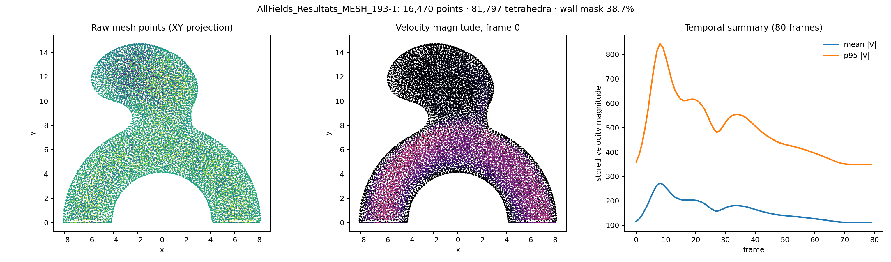
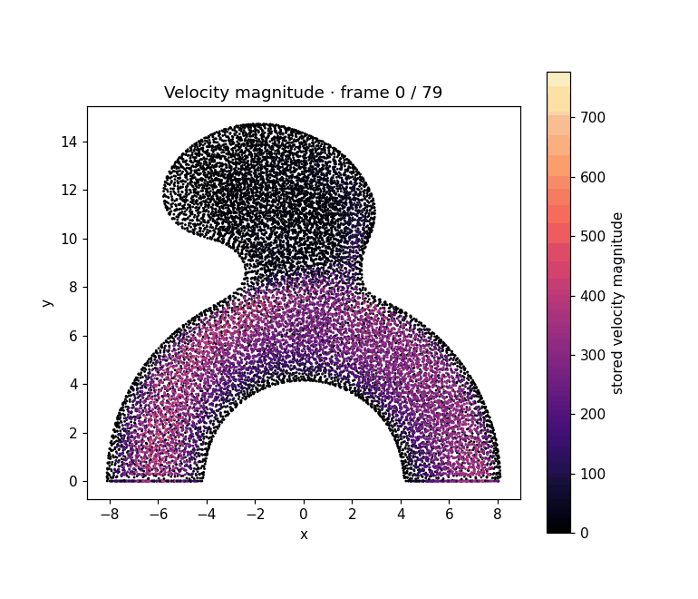

In-PI-MGN 재현을 위한 transient CFD benchmark의 원본 구조, field 정의, graph 전처리와 실제 표본 분석 기록.
PURPOSE & BOUNDARY
A flow-field benchmark, not a clinical cohort.
이 데이터는 동맥류 형태에서 비정상 CFD mesh 위의 시간 변화 velocity를 예측하는 surrogate task에 사용한다. 환자 영상, rupture label, 임상 변수는 제공하지 않으므로 risk stratification label로 재사용하지 않는다. 아래 수치는 AllFields_Resultats_MESH_193-1을 서버에서 직접 파싱하여 얻었다.
01 / SOURCE ASSETS
What arrived, and what it means
Archive audit
Source: Google Cloud archive linked by the 2026 In-PI-MGN study Raw archive: 1,123,362,206 bytes Integrity check:unzip -t passed Extracted pairs: 105 .h5 + 105 .xdmf
.h5 holds numeric arrays. .xdmf is not a duplicate: it defines the topology/geometry references and assigns semantics to the anonymous HDF5 arrays. Both files are required for an auditable reader.
XDMF-resolved field dictionary
data0Geometry: XYZ, float32 [N, 3]data1Topology: tetrahedron, int64 [E, 4]data2 + 2tVitesse: velocity vector, float32 [N, 3]data3 + 2twall_mask: scalar node label, float32 [N]tXDMF time value 0…79; temporal index, not physical secondsN / Ecase-specific vertex and tetrahedron counts
“Vitesse”는 XDMF 원문에 적힌 velocity field 이름이다. 이 archive의 XDMF time values는 0–79 index이므로, frame 간 실제 시간 간격은 논문/배포 문서에서 확인하기 전까지 초 단위로 표기하지 않는다.
02 / RAW SAMPLE EDA
One mesh, viewed from the stored arrays
아래 그림과 animation은 시각화 라이브러리의 예제 그림이 아니라 원본 HDF5 MESH_193-1의 data0, data2…160을 직접 읽어 생성했다. 2D 투영은 가독성을 위한 XY projection이며 임상 영상 slice가 아니다.

좌: raw mesh point의 XY projection. 중: frame 0의 |velocity|. 우: 각 frame에서 모든 node의 |velocity| 평균과 95th percentile. 색상/축의 수치는 저장된 field scale을 그대로 따른다.

80개 저장 frame을 두 frame 간격으로 재생한 velocity magnitude animation. 이는 solver output의 시각적 QA 용도이며, CFD velocity unit을 독립적으로 확정한 그림은 아니다.
16,470vertices
81,797tetrahedral cells
38.74%nodes with wall_mask = 1
111.08–272.40framewise mean |V| (stored scale)
EDA interpretation: mesh density와 velocity magnitude가 시간에 따라 크게 변하므로 모든 node를 동등하게 평균내는 지표만으로 surrogate 품질을 판단하면 안 된다. wall/interior를 분리하고, volume-weighted error·boundary flux·wall-near velocity를 함께 계산해야 한다.
graph/{case_id}.pt should contain pos[N,3], tetra[E,4], a reproducibly derived edge list, velocity[T,N,3], wall_mask[N], and source_h5_sha256. The cache must record the mesh-to-edge conversion and units decision; it never replaces the HDF5/XDMF source.
04 / TRAINING & QA PROTOCOL
Leakage-safe surrogate evaluation
Split
Geometry-disjoint case split. 동일 mesh의 다른 time frame을 train/test에 나누지 않는다.
Inputs
mesh geometry, connectivity, boundary/inlet context, initial/history state. paper reproduction에서는 원 논문의 frame setup을 별도 manifest로 고정한다.
Targets
velocity vector rollout. wall_mask는 target이 아니라 boundary-aware loss/evaluation mask 후보이다.
Report
one-step 및 multi-step error, velocity magnitude/vector error, mass-flux discrepancy, wall/interior stratification, worst-case mesh를 함께 보고한다.